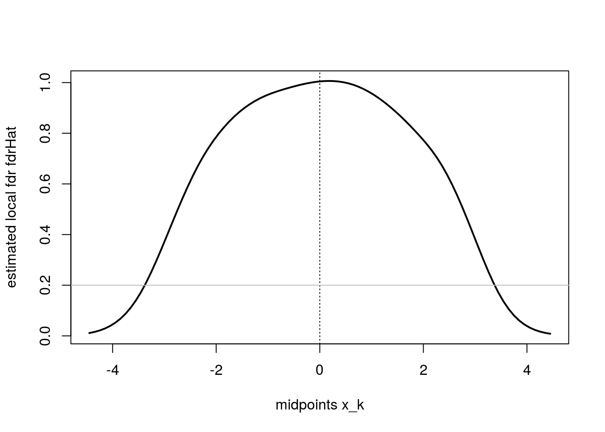

library(locfdr)
library(splines)
#setwd("/Users/christinatripp2/Dropbox/SEDSLab/LSI Book/Examples/Chapter5locfdr")
load("prostz.RData")
# head(prostz) # z-stats
locfdrplot <- locfdr(prostz)## to make results consistent with the book
which(abs(prostz)> 4.5)## [1] 610 1720prostz[610]## [1] 5.291964prostz[1720]## [1] 4.834436prostzcut <- prostz[prostz<=4.5 & prostz>=-4.5] # omitting two huge values
# It appears as though he still uses N=6033 instead of N=6031
######################
## Lindsey's method ##
######################
bin<- 90 # number of bins
# lo <- min(prostz)
# up <- max(prostz)
N<- length(prostz) # number of cases=6033, used to match his results
d<- 0.1 # bin width
df<- 7 # J= degrees of freedom
breaks <- seq(-4.5, 4.5, d)
zh <- hist(prostzcut, breaks = breaks, plot = F)
y <- zh$counts # y = the number of counts in each of the 90 bins
x <- zh$mids # note this equals the midpoints x of each bin
head(x)## [1] -4.45 -4.35 -4.25 -4.15 -4.05 -3.95# Another way to get the midpoints:
# x <- (breaks[-1] + breaks[-length(breaks)])/2
K <- length(y) # 90
k <- seq(K) # seq from 1:90
# X<- cbind(1,ns(x,df=df))
# X<- cbind(1,poly(x,df=df))
yhat <- glm(y ~ ns(x,df=df), poisson)$fit # the expected value of Y, i.e. yhat = N*d*f(x_k)
Fl <- cumsum(yhat) #empirical cdf
Fr <- cumsum(rev(yhat))
###############
## Table 5.1 ##
###############
pi0 <- 0.932 # prior probability of null (from page 71 in Efron)
e0 <- N*d*pi0*dnorm(x) # expected null count
fdrBar <- e0/y
fdrHat <- e0/yhat
table <- cbind(k,x,e0,y,fdrBar,yhat,fdrHat) # recreating table 5.1
table[76:83,]## k x e0 y fdrBar yhat fdrHat
## 76 76 3.05 2.1421363 4 0.5355341 6.016149 0.35606439
## 77 77 3.15 1.5711433 9 0.1745715 5.150022 0.30507506
## 78 78 3.25 1.1408842 8 0.1426105 4.453552 0.25617398
## 79 79 3.35 0.8202087 2 0.4101044 3.890393 0.21082930
## 80 80 3.45 0.5838002 4 0.1459501 3.430106 0.17019889
## 81 81 3.55 0.4113971 4 0.1028493 3.049880 0.13488958
## 82 82 3.65 0.2870220 4 0.0717555 2.732455 0.10504180
## 83 83 3.75 0.1982559 1 0.1982559 2.464633 0.08044036#####################
## pg 71 histogram ##
#####################
hi<- hist(prostzcut,breaks=breaks,xlab="z values",ylab="counts")
# add dashed curve- the scaled estimate. Trial and error yielded 540.
lines(x,540*dnorm(x),lty="dashed", lwd=2)
# add thick solid curve- estimate for mixture density
lines(x,yhat,lwd=3)# Try with pi0*d*N as scale (looks much more similar to locfdr plot)
hi<- hist(prostzcut,breaks=breaks,xlab="z values",ylab="counts")
lines(x,yhat,lwd=3)
lines(x,pi0*d*N*dnorm(x),lty="dashed",col="red",lwd=3)# lines(x,0.10*6033*0.932*dnorm(x),lty=2,col="red")
# area under the curve == sum of area of histogram bins
height<- hi$counts
sum(height*d) # = 6031*.1## [1] 603.1# Now try adding back the 2 omitted observations into bin 90:
y[90] # currently 1 observation in bin 90## [1] 1y[90]<- 3
yhat<- glm(y~ns(x,df=df),poisson)$fit # the expected value of Y, i.e. yhat
table<- cbind(k,x,e0,y,fdrBar,yhat,fdrHat) # recreating table 5.1
table[76:83,]## k x e0 y fdrBar yhat fdrHat
## 76 76 3.05 2.1421363 4 0.5355341 5.960885 0.35606439
## 77 77 3.15 1.5711433 9 0.1745715 5.139519 0.30507506
## 78 78 3.25 1.1408842 8 0.1426105 4.486956 0.25617398
## 79 79 3.35 0.8202087 2 0.4101044 3.966093 0.21082930
## 80 80 3.45 0.5838002 4 0.1459501 3.545777 0.17019889
## 81 81 3.55 0.4113971 4 0.1028493 3.202937 0.13488958
## 82 82 3.65 0.2870220 4 0.0717555 2.920285 0.10504180
## 83 83 3.75 0.1982559 1 0.1982559 2.684683 0.08044036# Now the table (specifically column yhat) matches book perfectly.
#################################
## Recreate Figure 5.2: ##
## local fdr for prostate data ##
#################################
## fdrHat vs midpoints x
plot(x,fdrHat,xlab="midpoints x_k",ylab="estimated local fdr fdrHat",lwd=2,type="l")
abline(v=0,lty="dotted")
abline(h=0.2, col="grey")
####
# f<- glm(y~ns(x,df=df),poisson)
# predict(f,type="link")
# l<- log(f)
# D <- (y - f)/(f + 1)^0.5 # standardizing
# D <- sum(D[2:(K - 1)]^2)/(K - 2 - df) # sum of Poisson deviances: measure of discrepancy between observed and fitted value